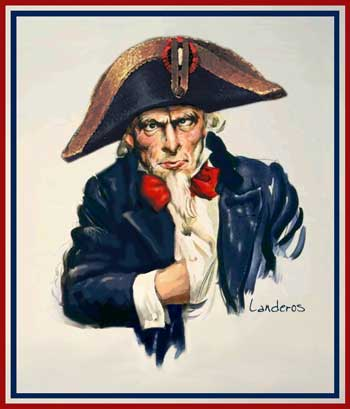

|

The United States of America has gone mad
Of course, this is just the opinion of one famous British novelist.
- - - - - - - - - -
by John le Carre
 MERICA has entered one of its periods of historical madness, but this is the worst I can remember: worse than McCarthyism, worse than the Bay of Pigs and in the long term potentially more disastrous than the Vietnam War. MERICA has entered one of its periods of historical madness, but this is the worst I can remember: worse than McCarthyism, worse than the Bay of Pigs and in the long term potentially more disastrous than the Vietnam War.
The reaction to 9/11 is beyond anything Osama bin Laden could have hoped for in his nastiest dreams. As in McCarthy times, the freedoms that have made America the envy of the world are being systematically eroded. The combination of compliant US media and vested corporate interests is once more ensuring that a debate that should be ringing out in every town square is confined to the loftier columns of the East Coast press.
The religious cant that will send American troops into battle is perhaps the most sickening aspect of this surreal war-to-be. Bush has an arm-lock on God. And God has very particular political opinions.
|
The imminent war was planned years before bin Laden struck, but it was he who made it possible. Without bin Laden, the Bush junta would still be trying to explain such tricky matters as how it came to be elected in the first place; Enron; its shameless favouring of the already-too-rich; its reckless disregard for the world's poor, the ecology and a raft of unilaterally abrogated international treaties. They might also have to be telling us why they support Israel in its continuing disregard for UN resolutions.
But bin Laden conveniently swept all that under the carpet. The Bushies are riding high. Now 88 per cent of Americans want the war, we are told. The US defence budget has been raised by another $60 billion to around $360 billion. A splendid new generation of nuclear weapons is in the pipeline, so we can all breathe easy. Quite what war 88 per cent of Americans think they are supporting is a lot less clear. A war for how long, please? At what cost in American lives? At what cost to the American taxpayer's pocket? At what cost -- because most of those 88 per cent are thoroughly decent and humane people -- in Iraqi lives?
How Bush and his junta succeeded in deflecting America's anger from bin Laden to Saddam Hussein is one of the great public relations conjuring tricks of history. But they swung it. A recent poll tells us that one in two Americans now believe Saddam was responsible for the attack on the World Trade Centre. But the American public is not merely being misled. It is being browbeaten and kept in a state of ignorance and fear. The carefully orchestrated neurosis should carry Bush and his fellow conspirators nicely into the next election.
Those who are not with Mr Bush are against him. Worse, they are with the enemy. Which is odd, because I'm dead against Bush, but I would love to see Saddam's downfall -- just not on Bush's terms and not by his methods. And not under the banner of such outrageous hypocrisy.
The religious cant that will send American troops into battle is perhaps the most sickening aspect of this surreal war-to-be. Bush has an arm-lock on God. And God has very particular political opinions. God appointed America to save the world in any way that suits America. God appointed Israel to be the nexus of America's Middle Eastern policy, and anyone who wants to mess with that idea is a) anti-Semitic, b) anti-American, c) with the enemy, and d) a terrorist.
God also has pretty scary connections. In America, where all men are equal in His sight, if not in one another's, the Bush family numbers one President, one ex-President, one ex-head of the CIA, the Governor of Florida and the ex-Governor of Texas.
What is at stake is not an imminent military or terrorist threat, but the economic imperative of US growth. What is at stake is America's need to demonstrate its military power to all of us...
|
Care for a few pointers? George W. Bush, 1978-84: senior executive, Arbusto Energy/Bush Exploration, an oil company; 1986-90: senior executive of the Harken oil company. Dick Cheney, 1995-2000: chief executive of the Halliburton oil company. Condoleezza Rice, 1991-2000: senior executive with the Chevron oil company, which named an oil tanker after her. And so on. But none of these trifling associations affects the integrity of God's work.
In 1993, while ex-President George Bush was visiting the ever-democratic Kingdom of Kuwait to receive thanks for liberating them, somebody tried to kill him. The CIA believes that "somebody" was Saddam. Hence Bush Jr's cry: "That man tried to kill my Daddy." But it's still not personal, this war. It's still necessary. It's still God's work. It's still about bringing freedom and democracy to oppressed Iraqi people.
To be a member of the team you must also believe in Absolute Good and Absolute Evil, and Bush, with a lot of help from his friends, family and God, is there to tell us which is which. What Bush won't tell us is the truth about why we're going to war. What is at stake is not an Axis of Evil -- but oil, money and people's lives. Saddam's misfortune is to sit on the second biggest oilfield in the world. Bush wants it, and who helps him get it will receive a piece of the cake. And who doesn't, won't.
If Saddam didn't have the oil, he could torture his citizens to his heart's content. Other leaders do it every day -- think Saudi Arabia, think Pakistan, think Turkey, think Syria, think Egypt.
Baghdad represents no clear and present danger to its neighbours, and none to the US or Britain. Saddam's weapons of mass destruction, if he's still got them, will be peanuts by comparison with the stuff Israel or America could hurl at him at five minutes' notice. What is at stake is not an imminent military or terrorist threat, but the economic imperative of US growth. What is at stake is America's need to demonstrate its military power to all of us -- to Europe and Russia and China, and poor mad little North Korea, as well as the Middle East; to show who rules America at home, and who is to be ruled by America abroad.
The most charitable interpretation of Tony Blair's part in all this is that he believed that, by riding the tiger, 'he could steer it. He cant. Instead, he gave it a phoney legitimacy, and a smooth voice. Now I fear, the same tiger has him penned into a corner, and he can't get out.
It is utterly laughable that, at a time when Blair has talked himself against the ropes, neither of Britain's opposition leaders can lay a glove on him. But that's Britain's tragedy, as it is America's: as our Governments spin, lie and lose their credibility, the electorate simply shrugs and looks the other way. Blair's best chance of personal survival must be that, at the eleventh hour, world protest and an improbably emboldened UN will force Bush to put his gun back in his holster unfired. But what happens when the world's greatest cowboy rides back into town without a tyrant's head to wave at the boys?
Blair's worst chance is that, with or without the UN, he will drag us into a war that, if the will to negotiate energetically had ever been there, could have been avoided; a war that has been no more democratically debated in Britain than it has in America or at the UN. By doing so, Blair will have set back our relations with Europe and the Middle East for decades to come. He will have helped to provoke unforeseeable retaliation, great domestic unrest, and regional chaos in the Middle East. Welcome to the party of the ethical foreign policy.
There is a middle way, but it's a tough one: Bush dives in without UN approval and Blair stays on the bank. Goodbye to the special relationship.
I cringe when I hear my Prime Minister lend his head prefect's sophistries to this colonialist adventure. His very real anxieties about terror are shared by all sane men. What he can't explain is how he reconciles a global assault on al-Qaeda with a territorial assault on Iraq. We are in this war, if it takes place, to secure the fig leaf of our special relationship, to grab our share of the oil pot, and because, after all the public hand-holding in Washington and Camp David, Blair has to show up at the altar.
"But will we win, Daddy?"
"Of course, child. It will all be over while you're still in bed."
"Why?"
"Because otherwise Mr Bush's voters will get terribly impatient and may decide not to vote for him."
"But will people be killed, Daddy?"
"Nobody you know, darling. Just foreign people."
"Can I watch it on television?"
"Only if Mr Bush says you can."
"And afterwards, will everything be normal again? Nobody will do anything horrid any more?"
"Hush child, and go to sleep."
Last Friday a friend of mine in California drove to his local supermarket with a sticker on his car saying: "Peace is also Patriotic". It was gone by the time he'd finished shopping.
Copyright 2003 Times Newspapers Ltd.
Reprinted from The Times Of London:

|